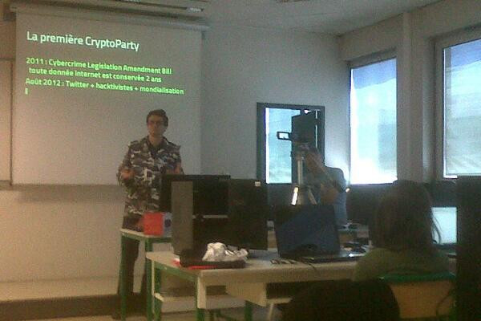
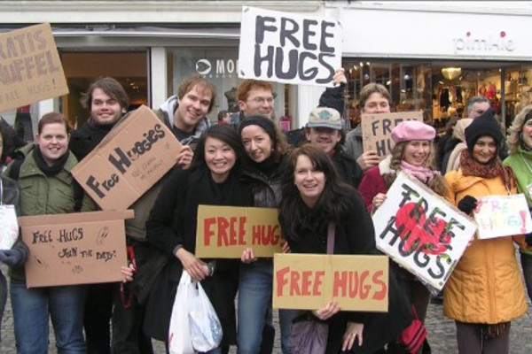
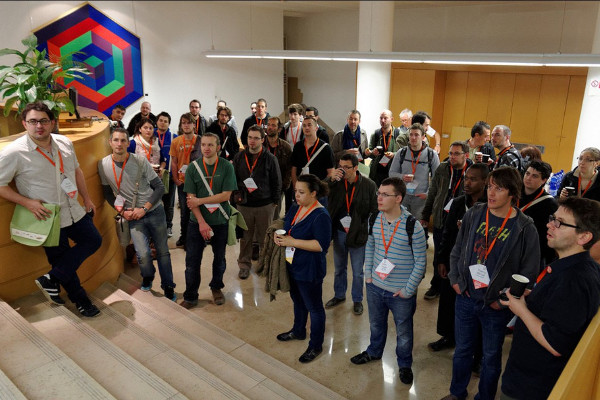
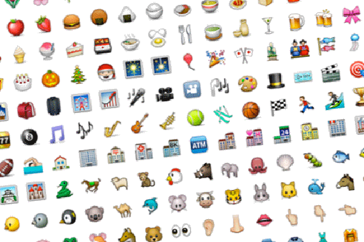

Hello ! Je suis Xavier Mouton-Dubosc
Je suis lead developer back chez Adaptive Channel. J'ai auparavant conçu dAgence.pro, une solution hébergée pour le e-commerce à destination des agences web.
J'aime avoir une vision objective de l'existant pour concevoir des sites qui dureront. J'aime donc défricher les standards qui évoluent et déterminer des solutions pérennes. Je suis sensibilisé aux problèmes de sécurité et de vie privée et je partage mes connaissances lors de conférences.
Mes compétences font la part belle à la modernité, la solidité, l'accessibilité et surtout à l'expérience. Je travaille sur les langages serveurs (PHP, NodeJS, Python, SQL, Bash), le front (HTML5, Javascript, CSS) et les Single Page Application. Je peux vous conseiller, soutenir votre équipe et vous aider à faire le meilleur choix possible pour le futur de votre activité.
Ce site n'a intentionnellement aucun style : mon métier est derrière la présentation.
Projets libres :
Je m'implique dans l'univers open-source, ou je fais des expériences sous licence libre.
Bibliothèque permettant les liens externes vers une ressource média à un moment arbitraire.
Chapitre sur l'astuce des polices ligaturées dans le livre Performance Web initié par Éric Daspet.
Utilitaire navigateur pour afficher les ancres d'un document html.
Implémentation d'un concept simple dans différents langages en TDD avec fichier comportemental unique.
Jeu en single application page, à visée éducatif. Sur une idée et avec Fabien Tregan.
Adaptation d'une mire TV de Ryan Gilmore en document html statique pour vérifier les problèmes d'implémentations par navigateurs.
Vérificateur de niveau de solidité de mot de passe.
Je m'implique pour populariser
Conférences :

Cryptoparty, Avril 2014, IUT Blagnac
Cryptoparty, Avril 2014, Epitech Toulouse
Recouper, partager, apprendre, faire progresser. Petit guide historique de la protestation technologique à la surveillance de masse.

Capitole du Libre 2013, Toulouse
Avril 2014, Mozilla Paris
En 20 minutes, je vais vous parler du JSON, de sa licence, de politique étrangère, d'activisme, d'humour, du Bien et du Mal.

Paris Web 2013
Au-delà du métier, de notre rôle de conseil, nous devons nous imposer pour que les lois ne s'écrivent plus contre nous. Expliquer la neutralité des réseaux, et en quoi notre vie privée n'est pas pas négociable.
Sud Web 2012, Toulouse
J'ai mis mon plus beau costard à Sud Web pour en tailler un beau.

Apero Web, Septembre 2012, Toulouse
En Mars 2009, une drôle de proposition a été faite au Consortium Unicode par Apple et Google. Les ennemis du smartphone s'étaient unis dans une cause pour ajouter des entrées au lexique des caractères universels.
I'm a bagger
Je peux aussi vous proposer de faire un brown-bag avec votre équipe.
Retours d'expériences :
Je rapporte des bugs aux navigateurs, je signale et corrige des problèmes sur des bibliothèques, j'écris parfois dans la presse spécialisée et je donne épisodiquement des conférences. Et il m'arrive d'aborder des sujets techniques sur mon blog :
Si vous ne le saviez pas, ceux qui y vont font partie d'une caste de privilégiés car construisent le web. Nous sommes les fameux 1%.
Quel sens a ce costume que j'arbore aux conférences sur le web, ce que signifient les badges et décorations et surtout… est-ce ridicule ou aide-t-il à porter un message ?
Nos machines valent un certain prix, elles sont nos outils de travail et de communication, et pourtant, nous les bariolons de gomettes et d'images Panini™. Quel est la raison de ce comportement chez les professionnels du web ?
Où l'on apprendra comment les images sont gérées par les serveur web, et comment les navigateurs utilisent le document et ses méta-données header http. Avec une très belle astuce pour les CMS.
Debrief d'une soirée qui a très bien marché, leçons et suggestions de vous tous, et tout plein d'échanges lors de cette chiffrofête. Ma contribution à la Journée Internationale contre les DRM.
Bon, coco, ton logo, je te l'exporte en quel format ? en bitmap ? dégradé ? paletté ? avec alpha-transparence ? sans animation ? ni support MSIE 7 ?
Recouper, partager, apprendre, faire progresser. Petit guide historique de la protestation technologique à la surveillance de masse.
Exceptionnellement, je refais la conférence sur la licence JSON pour les non-chocolatinistes. Jeudi 17 à 19h30 chez Mozilla Paris (16 bis Boulevard Montmartre).
Mardi 29 Avril 2014, de 19h à 22h, venez à Epitech Toulouse pour poser vos questions, pour comprendre comment remettre du personnel dans l'informatique personnelle. Et surtout pour célébrer le prix Pulitzer aux journalistes qui ont travaillé sur les documents Snowden.
Comment est appelé, paramétré, configuré la balise <img /> dans le source html. Milles et une petites plaisanteries, hacks malheureux ou astuces qui furent standards à un moment.
… hors code
Ma prose est publiée et archivée sur mon blog personnel. Vous serez intéressé soit sur le domaine du développement web, soit sur mes activités professionnelles.